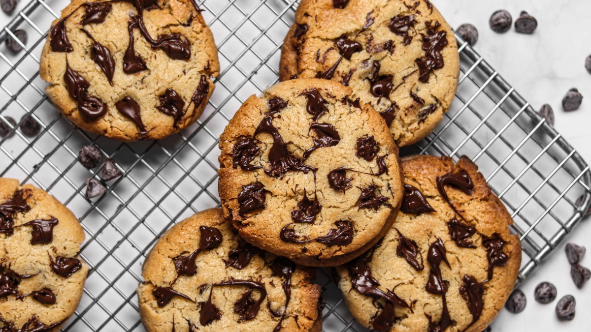

Receta de Galletas de Chocolate

Ingredientes
- 2 tazas de harina de trigo
- 1 taza de azúcar
- 1 taza de chispas de chocolate
- 1/2 taza de mantequilla
- 2 huevos
- 1 cucharadita de esencia de vainilla
- 1 cucharadita de polvo para hornear
- 1 pizca de sal
Preparación
- Precalienta el horno a 180°C (350°F).
- En un tazón grande, mezcla la mantequilla con el azúcar hasta obtener una crema suave.
- Agrega los huevos y la esencia de vainilla, y x|mezcla bien.
- Incorpora la harina, el polvo para hornear y la sal. Mezcla hasta integrar.
- Agrega las chispas de chocolate y revuelve.
- Coloca porciones de masa en una bandeja para hornear con papel pergamino.
- Hornea por 10-12 minutos o hasta que estén doradas. Deja enfriar antes de servir.